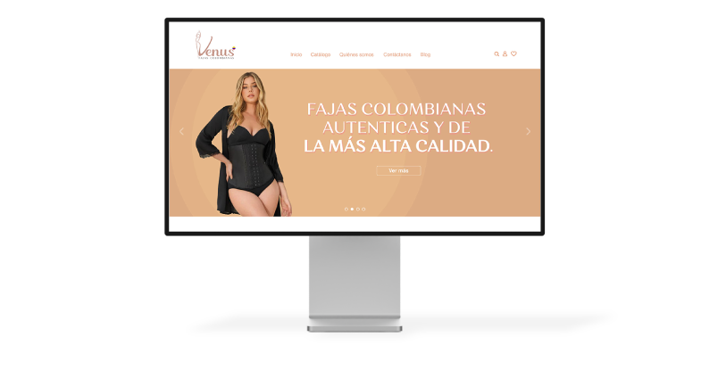
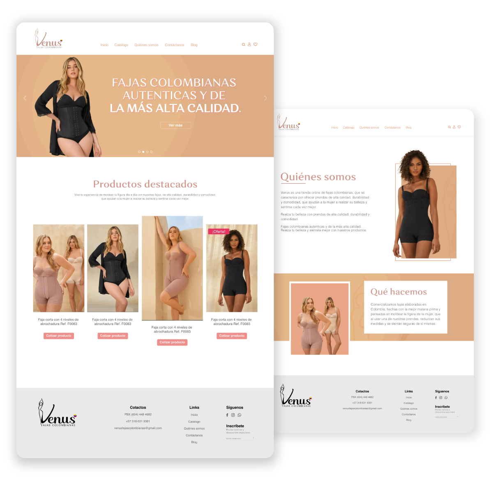
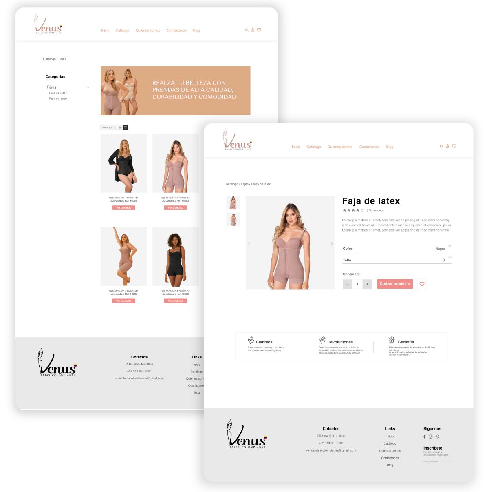
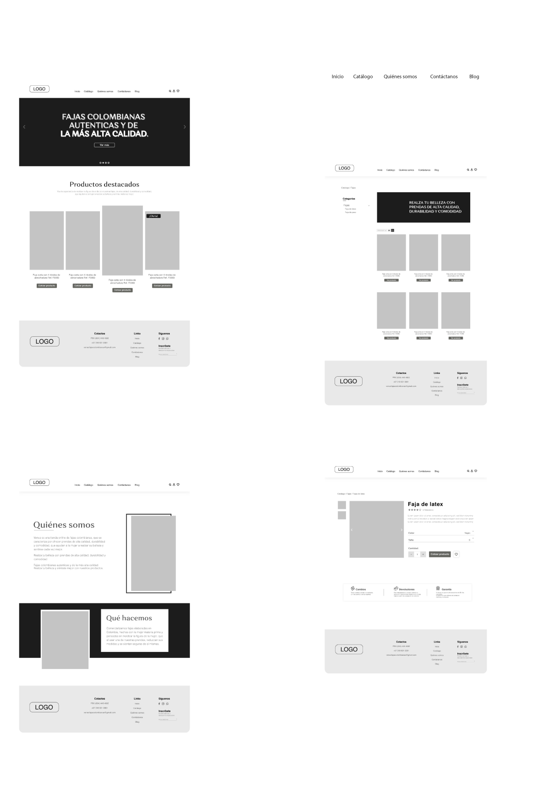

Sitio web
Diseño del sitio web para el catálogo de productos de la marca Venus, empresa de fajas colombianas autenticas. En la parte de Ux del proyecto se realiza el flujo del usuario para todo el sitio web.




Se logró construir un sitio web coherente, responsive y cumpliendo todos los standars del diseño
Ui/Ux.
El diseño fue realizado para la empresa WebPyme.